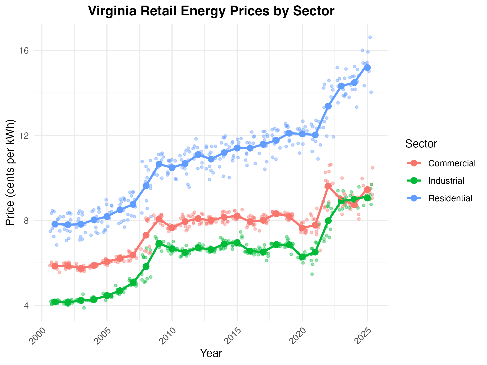
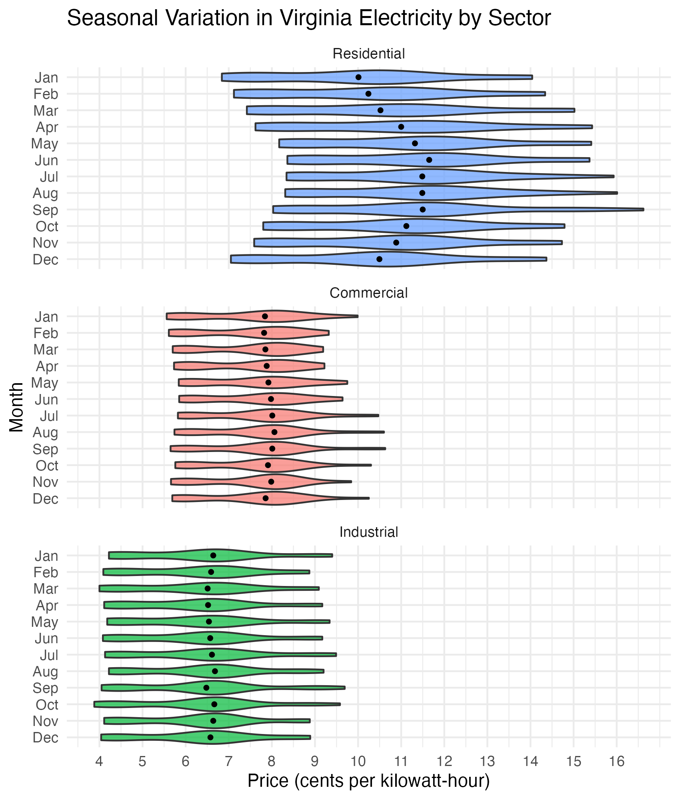
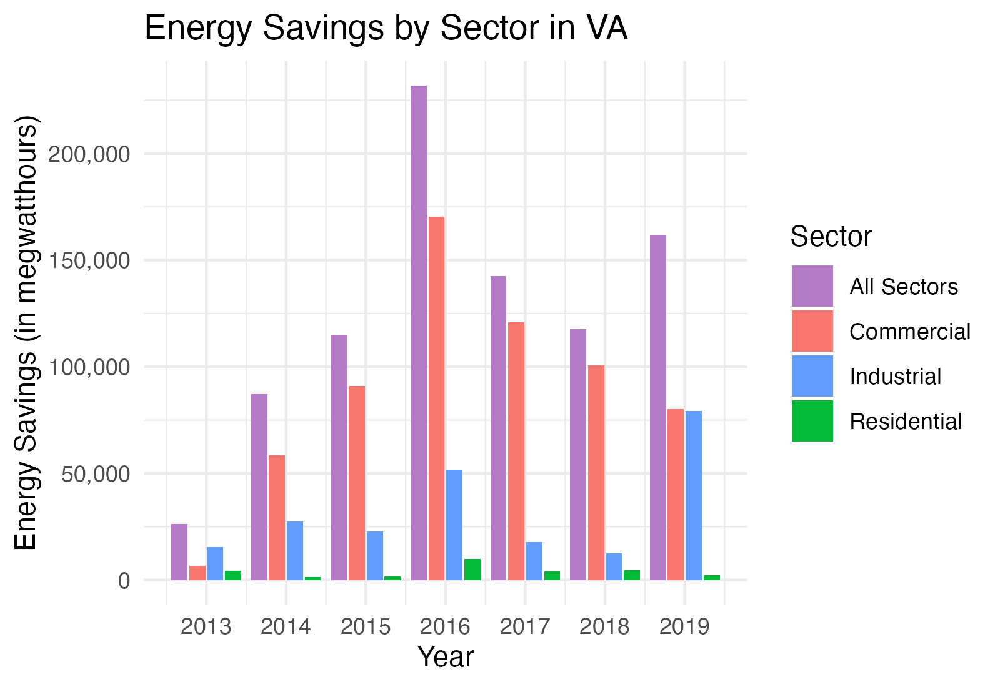

Virginia Electricity Overview
Virginia Electricity Trends
This page gives an overview of Virginia’s trends in electricity usage and customers by sector.
Background: Virginia Energy Context
We chose Virginia as one the United States’s most important electricity markets due to Northern Virginia hosting the largest concentration of data centers in the world. These specialized buildings, which are registered as commercial in Virginia, power computer servers and routers and consume 10 to 50 times more energy per floor space compared to other commercial office buildings. The rise of advanced technologies, including AI, has driven a massive surge in the demand for data centers, which require significant power and specialized infrastructure like liquid cooling.
Besides data center activity, we also observe a couple of key facts that make Virginia particularly interesting to study:
Dominion Electricity, an energy company, supplies electricity to Virginia as well as parts of North Carolina, West Virginia, Pennsylvania etc. The company reveals interesting electricity trends by making detailed data public
The Virginia Clean Economy Act (VCEA, 2020) has mandated a renewable transition for the state, leading to interesting changes in fuel mix
Virginia demonstrates significant reliance on natural gas – the state’s natural gas consumption is nearly eight times higher than its own production. This makes electricity prices for end consumers sensitive to input fuel price shocks
Virginia Retail Electricity Prices by Sector

This plot looks at Virginia electricity prices over time for the Residential, Commercial, and Industrial sectors. Each dot represents the average electricity price for that month (cents/kWh) and the smooth lines highlight long-term trends.
We see all sectors becoming more expensive over time due to factors we will explore below: fuel price trends, investment in new infrastructure such as data centers, and environmental policy.
Changes in Natural Gas Prices

This graph shows changes in Virginia’s natural gas prices for the Commercial and Residential sectors affect these customers’ end electricity prices. We can see how input fuel markets affect retail pricing.
This graph shows a close relationship between natural gas prices and retail prices. For example, between 2021-2022 when natural gas prices spiked for both sectors, retail prices also followed.
However, in some periods like between 2010 and 2016, where natural gas prices stayed steady, retail prices slowly increased. This suggests there are other factors that affect retail prices, which we will go on to explore.
Electricity Generation Fuel Mix

This is a stacked bar plot that highlights Virginia’s electricity generation mix for the last five years. It shows what percentage of the state’s electricity was generated from four different fuel types: coal, natural gas, hydroelectric, and solar. Note wind was omitted because an insignificant portion of the state’s electricity comes from this source.
This relates back to the earlier plot, demonstrating the state grid’s overwhelming reliance on natural gas. This explains retail price sensitivity to changes in price of this underlying fuel type.
We also see evidence of the VCEA at play. From 2020 onwards, renewables (hydroelectric and solar) as a share of the state’s total generation have increased. However, they still remain a small share. Notably, the state has weaned itself off of coal, reflecting retirement of plants that have reached the end of their useful life.
Commercial Sector Electricity Sales

This shows the commercial sector’s monthly electricity sales for the last five years (orange line) as well as a smoothened line that more clearly shows a long-term trend (pink line).
The orange line reflects normal seasonal swings – high electricity needs in the summer from air conditioning and in the winter with heating. We will explore seasonality in plots below.
The pink line reflects long-term demand growth primarily driven by data center expansion in Northern Virginia and, to a lesser extent, grid electrification. This pink line also explains the trend we see in retail prices in the commercial sector in the first plot. Above, we see commercial sector prices spike after 2021, which coincides with the demand growth displayed in this plot. This is because of demand pressure on the grid as utilities must expand to meet the needs of this increased baseload.
Seasonal Variability across all Sectors

This is a violin chart which shows the distribution of Virginia’s electricity prices by months over the time period drawn from the API.
The shape shows the range of observed prices in the month while the black dot marks the average price (cents/kWh).
This plot explains the importance of seasonality on month-to-month changes in retail electricity prices. Virginia displays considerable climate variability. Average prices peak slightly in the summer due to data centers displaying increased server cooling among other factors. In the winter, while there are heating needs, December to February months display slightly narrower and lower price distributions.
Seasonal Variability by Sector

This violin plot is an extension of the one above, displaying monthly retail price distributions broken down by sector: residential, commercial, and industrial.
We see residential customers face the largest seasonal swings and have the broadest distributions overall. This can be attributed to increased exposure during hot summer months: air conditioning to fight heat waves.
Comparatively, commercial and industrial customers are better buffered against seasonality, with the latter enjoying negotiated high-load contracts.
Energy Savings by Sector

To end, let’s look at this bar chart. It looks at annual energy savings in Virginia across four sectors: residential, commercial, industrial, and transportation. The API only had data for the years from 2013 to 2019. Energy savings can arise due to multiple factors such as efficiency improvements in building (e.g., light upgrades) or utility-sponsored efficiency programs.
This bar chart shows most energy savings were driven by the commercial and industrial sectors. Because these sectors consume large amounts of energy per customer, they present ripe opportunities for energy efficiency gains.
Energy savings peaked in 2016. Focus on the commercial and industrial sectors. When looking back at our initial retail prices by sector plot, we see the commercial and industrial sectors didn’t experience retail price growth in 2016. This shows that efficiency gains can be one way of moderating the demand-side inflationary pressures caused by data centers.